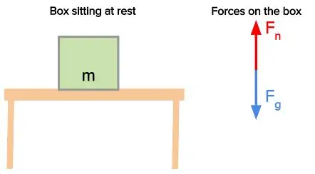
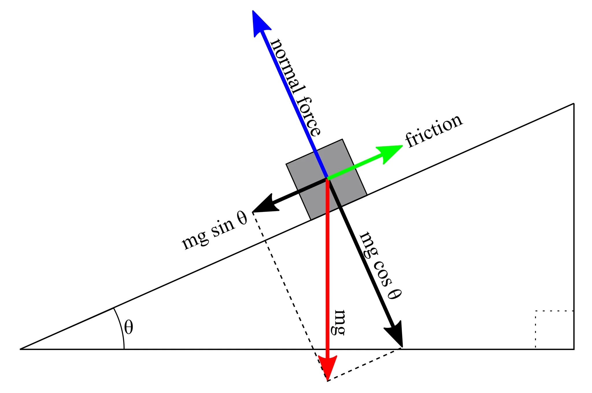

Physics 20
Prerequisite: Science 10
IMPORATANT NOTICE: Due to the immense size of the content and the lack of time to invest for both creaters, I have decided that for this physics page, I will be more tips oriented instead of a complete retell of the course.
Overview:
It is a very fun subject about discovering how this world works.
The problem is that it is also not the easiest science ever.
But you will survive.
Proof: The authors did not learn a single bit in advance and
spent 1 hrs max per day on physics and got high 90s in the end.
You will learn about dynamics (kinematics, gravity, Newton's Laws, that stuff)
and waves (simple harmonic motion, wave phenomena) in Physics 20/IB.
At some point during your reading of this website, and although it is our intention to prevent it,
you will likely and inevitably stumble upon a concept of which you cannot find an answer to the why
of the concept. Why is gravity 9.81m/s2? Why \( F = ma\)? For these questions, you can
try to use ai to answer them. Just know that you will inevitably stumble upon something you could not understand even
with ai. It is normal. You just haven't learnt the way to prove it, its ok, leave it for now and memorize it.
(In the case of why the developers took Physics, neither of them know)
Important note: In Physics 20 and 30, memorization of formulas are important. Although you may be given a
formula sheet, sometimes there are "shortcut" formulas of which may not be on the formula sheet. Therefore,
it is in your best interest to try to memorize any formulas that appear.
(That was the other dev's edit, which kinda got my point wrong. But yes, memorizing shortcuts are important, there is just
not many shortcuts in total if any) What I was trying to say is, when you don't understand something, its ok, if you know
how to memorize it and how to use it, you will get mark. And if you get mark, it is good.
Important note: Unit analysis may save your life. This is knowing the exact, basic units behind a derived
unit. Such as a newton, denoted N, a measurement of force, being equal to kgm/s2. Although both
are a measurement of force, you may find that if you cannot recall the formula to find force, you can at least guess it by knowing
that you need to involve mass and acceleration.
Developer's notes: Was I yapping too much?
Anyways:
"Welcome to hell". -2025, Mr. Horne, Sir Winston Churchill High School
Physics 20 and 20IB goes over those topics:
(Sorry for being vague, I could not find my phyiscs 20 notes, will be more organized once I find them)
Vectors,
Newtonian Mechanics (Newton's three laws, gravity, etc.),
Circular Motion,
Energy,
Simple Harmonic Motion and
Waves
Where Vectors is easier than Newton's, which is easier than Energy, which is easier than
Circular Motion, which is easier than SHM and waves
Everything that is not waves is interconnected; SHM and waves are interconnected
Vectors
(To learn this, I assume you are: 1, human; 2, understand basic trigonomtery and what a right triangle is)
I could finish this part up in one paragraph:
This is, however, also really important, the foundation of all phyiscs I should say.
First, what is a vector?
A vector is a value with direction. Eg: Devin is running at 100km/h towards east. If I say:
Devin is running at 100km/h, this is not a vector. If I say: Devin is running towards east,
this is also not a vector.
A scalar is just a value. Eg: Devin is running at 100km/h.
Example of Vectors and Scalars
| Vectors | Scalars |
|---|---|
| Velocity | Speed |
| Displacement | Distance |
| Force | \(\left| Force \right| \) |
| n/a | Energy |
When a vector is straight north, south, east or west, we are happy, but when a vector is slanted, we are sad because a lot of formulas we use must make sure every value is in the same 1D space. When we are sad, we want to break down the slanted vector into components (x component and y component)
When we break it down into x and y components, it is really easy to analyze two different directions and then put them back together.
If you need a more detailed explaination, check out: 1D Vectors and 2D Vectors
Newton and his three really important laws
Put this really easily:
Newtons has three important laws that dictate how everything related to force works.
1st law:
A body remains at rest, or in motion at a constant speed in a straight line, unless it is acted upon by a force.
You might be like: WAIT, I understand that if I don't push a ball, the ball would remain at rest,
but how on earth could it move at a constant speed?
The problem is that we are on earth, and so if you give it an initial velocity, it would roll on
THE GROUND (which has friction, which is a force acting in the opposite direction of its movement),
which means that it has a force acting on it while it roll, which makes it stop.
2nd law:
\(F = ma\)
Your first encounter of a formula! This formula means this:
\[Force (Newtons, N) = mass (kg) * acceleration (m/s^2)\]
You are like: WAIT what is this Newton and acceleration?????
First lets understand acceleration: As we all know velocity's unit is m/s, acceleration is the
measure of the change in velocity (per second), which is \(\Delta m/s per s\) (The little triangle means change in).
so acceleration is \(m/s^2\)
Then lets understand newton: A newtons is defined as the force needed to accelerate one kilogram of weight
at 1 \(m/s^2\), hence by definition, a newton of force is equal to \(1kg * 1m/s^2\), which satisfies the
formula \(F = ma\). The unit for newton can hence be expressed in two different ways:
1, \(N\) (newton, a derived unit)
2, \(kgm/s^2\) (Also newton, but expressed in SI unit) (SI units)
Remember the SI unit version of newton will save life when you forget stuff, example:
You forgot what the unit for mass is (highly unlikely), but you know that a newton is mass times acceleration, you know that
newton is \(kgm/s^2\) and acceleration is \(m/s^2\), then you know ohh, mass is in kg!
(If you are confused, search up for unit analysis)
3rd law:
Every action force has an equal and opposite reaction force.
To put it in English, you push a ball, the ball rolls forwards, you fall backwards. You
exerted a force on the ball, the ball exerted an equal and opposite force on you.
Notice that the action and reaction forces are never exerted on the same object (Or the ball
will never move!)
That is newton's three laws in a nutshell.
Gravity
accelleration due to gravity: \(9.81 m/s^2\)
To calculate any force due to gravity, simply do 9.81 * the mass of the object
As we all know when there is a force pulling something in a direction, that thing will move in that direction. The reason for an object resting on table not fall through that table is that the table is acting a \(normal force\) on the object too and counteracting the force of gravity.

It is worth noting that gravity always acts stright down and Normal force always act perpendicular to the surface of the object the mass is resting on. This is why an object slide down a ramp: The normal force could only cancel out the force gravity that is relatively perpendicular to the surface of the object, not the gravity component perpendicular to it.

This unit is really important as almost everything that follows is built upon it.
Circular motion
This thing is more confusing than gravity, and it is also carried into Physics 30, so be ware!
The most important part of this unit is to realize that on an outsider's perspective (your perspective
when you are solving problems), centrifugal force does not exist.
centrifugal force only exists when you are in the system (eg, you are in the turning car). From outside
what we as observer see a force pulling the car into the middle of the turn so that the car doesn't
fly out, which is exactly the opposite as centrifugal force.
That force is called a centripetal force.
I think centrifugal force is called a sudo force, if you are interested you can research on that.
Another very important point is that even though when performing the turn, the car's velocity doesn't
change, there is still a force acting on it as even though the magnitude of the velocity doesn't
change, the direction does, which is still a change in velocity which still needs a force to be accomplished.
That is basically the important parts of the unit, tbh I alr forgot how to calculate a vertical spinning object's
centripetal force but that doesn't matter that much, as in 30 when you encounter these problem you almost always
ignore gravity.
The fomulas, \(magnitude of accelleration = v^2/r = 4π^2r/T^2\) are quite intuitive so I would not spend time on them right now.
Khan Academy